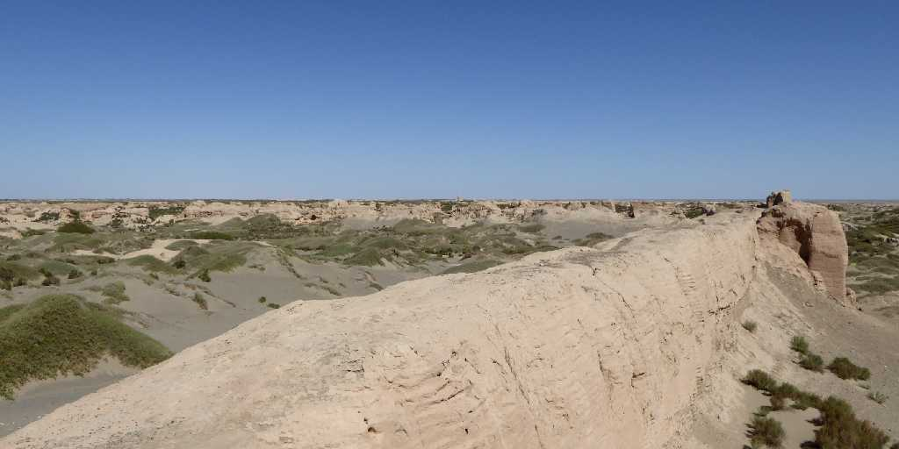
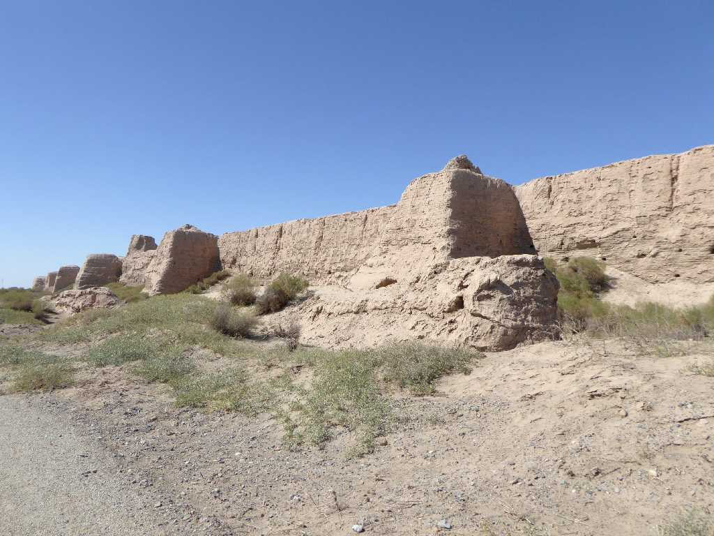
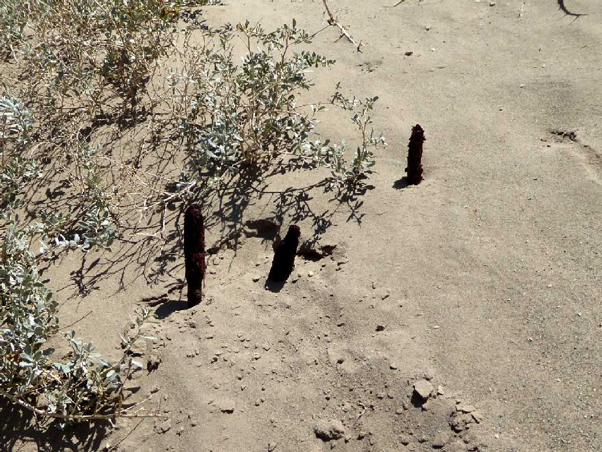
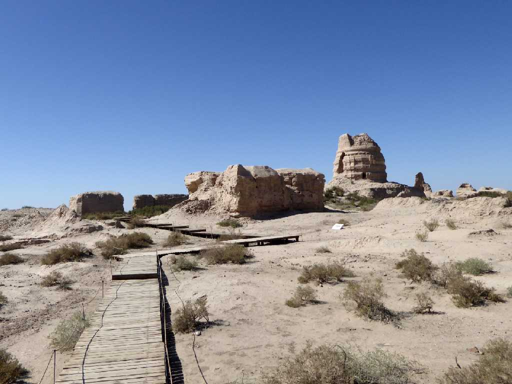
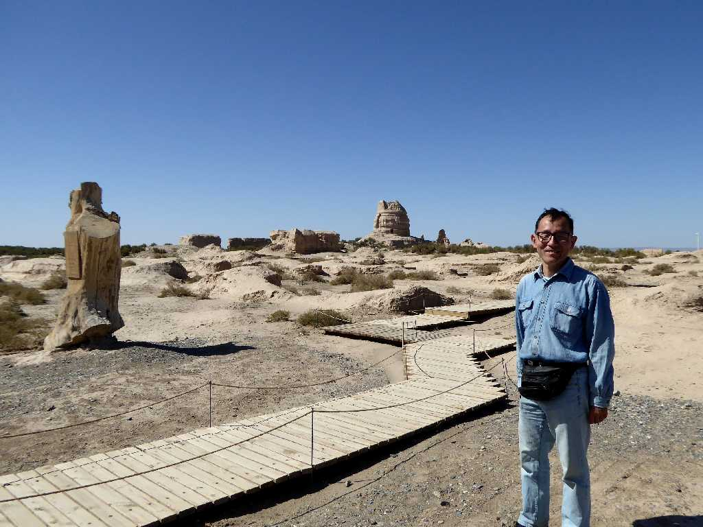

Suoyangcheng Jiuquan 酒泉 锁阳城
シルクロード全盛期に敦煌へ至る河西回廊の主要な道筋として栄えた唐時代の古城様式を残す鎖陽城

Suoyangcheng 锁阳城

Suoyang Suoyangcheng 锁阳城 锁阳
漢方薬に用いられる植物の鎖陽が多く生息しているためこの苦峪城は鎖陽城と呼ばれている

Ta'er temple Suoyangcheng 锁阳城 塔尔寺

September 13 2015 Ta'er temple 塔尔寺
タクラマカン砂漠周遊の旅は東端のここ酒泉の鎖陽城からシルクロード西域南道を通り西端のカラクリ湖を周り天山南路を通りウルムチまで約６,０００ｋｍを走る